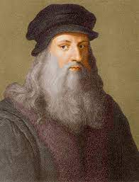
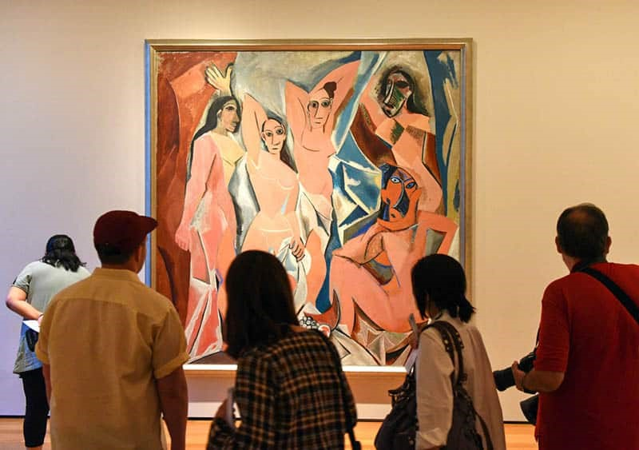
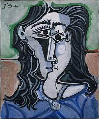

From the earliest cave paintings to modern artworks, we have always sought ways to express ourselves creatively. The most famous painters in the world were trailblazers who drew their subjects in new ways and explored new brush techniques.
Find out more about these talented painters who have created some of the best art of all time.
This Dutch Post-Impressionist artist is considered to be one of the greatest painters of all time. Born in 1853, Van Gogh created around 2,100 artworks despite having had no formal training.
Vincent originally planned to become a pastor and took up painting when he was sacked, aged 27. He was inspired by Japanese woodblock prints as well as Dutch genre artworks. Van Gogh was a prolific artist who produced 860 paintings, which did not sell well during his lifetime. He famously cut off his own ear after an argument with the artist Paul Gaugin.

The artist’s iconic Starry Night painting was made in the Saint-Paul-de-Mausole psychiatric hospital. Unfortunately, Van Gogh took his own life aged only 37.
Famous Van Gogh paintings: The Starry Night, Bedroom in Arles, Irises, Self-Portrait with Bandaged Ear, The Night Café.

The celebrated Italian polymath created some of the most famous paintings of all time. A talented draughtsman, architect, sculptor, engineer and artist, Leonardo was also an inventor.
He imagined all manner of innovations, such as a helicopter, calculator, parachute and diving suit. You can see the models for many of these inventions at Le Clos Lucé, the beautiful French chateau where Leonardo lived for several years.
One of the most famous sketch artists ever, Leonardo filled notebooks with his drawings. The Vitruvian Man is an ink on paper sketch that depicts perfect human body proportions.
Leonardo perfected the sfumato technique of painting. Translating as “soft” or “blurred”, this painting style creates subtle blending without harsh contours. The technique was used to great effect in Leonardo’s painting of the Mona Lisa.
Famous Leonardo paintings: Mona Lisa (also known as La Gioconda), The Last Supper, Lady with an Ermine, Virgin of the Rocks.

He created over 20,000 artworks, costumes, ceramics and prints. Picasso’s famous Blue Period is thought to have been inspired by the suicide of his friend Casagemas.
One of the most famous painters in the world, Pablo Picasso was born in Spain yet lived most of his life in France. A talented ceramicist, printmaker, theater designer and sculptor as well as a painter, Picasso has had a lasting impact on modern art.
He created over 20,000 artworks, costumes, ceramics and prints. Picasso’s famous Blue Period is thought to have been inspired by the suicide of his friend Casagemas.
He created over 20,000 artworks, costumes, ceramics and prints. Picasso’s famous Blue Period is thought to have been inspired by the suicide of his friend Casagemas.
Picasso was also influenced by African and Oceanic art, particularly in his seminal artwork, Les Demoiselles d’Avignon. Together with the artist Georges Braque, he developed the principles of Analytic Cubism.
Famous Picasso paintings: Guernica, Child with a Dove, Les Demoiselles d’Avignon
This highly influential Italian artist was a Renaissance architect, sculptor, poet and painter. After training as a sculptor, he carved the ‘Pietà’ for St Peter’s Cathedral in Rome.
Michelangelo painted the extraordinary Sistine Chapel ceiling frescoes between 1508 and 1512. A triumph of the Mannerist style, they combine idealization of the human form with unnaturalistic use of color.
The artist is also known for his marble sculpture of the biblical figure David. Created from 1501 to 1504, this 5.17metre statue can be viewed at the Accademia Gallery of Florence.

Famous Michelangelo paintings: Sistine Chapel ceiling, The Creation of Adam, The Last Judgment – a fresco painting in the Sistine Chapel.